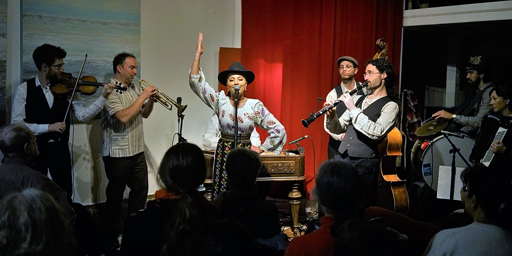

A shared repertoire
The ensemble’s Balkan and Eastern European repertoire has grown through direct musical exchange, including collaborations with artists rooted in Romanian and Moldovan traditions.
Photo 1 of 4 · Full ensemble
Orchestra Euphonos brings together Balkan and klezmer music in performances made for listening, dancing and celebrating. Its repertoire reaches across Eastern Europe, including Romanian and Moldovan traditions. Led by trumpeter Peter Bonos, the Bay Area ensemble explores the connections between these traditions through expressive melodies, ornamentation and the rhythms of social dance.
Founded in 2011, the band has grown through longstanding musical relationships.
Orchestra Euphonos has performed at venues including Great American Music Hall and at San Francisco’s Kolo Festival. From cultural festivals and community dances to weddings and private celebrations, the band brings people together around the music. Its recording Live at Cafe Rev offers a chance to hear the ensemble in a live setting.
Orchestra Euphonos is a San Francisco Bay Area ensemble led by trumpeter Peter Bonos, performing Balkan and klezmer music alongside a broad range of Eastern European folk traditions. The band’s sound centers on expressive melody, ornamentation and dance rhythms, bringing music shaped by celebration and community into concerts, cultural events and private gatherings.
The ensemble’s Balkan and Eastern European repertoire has grown through direct musical exchange, including collaborations with artists rooted in Romanian and Moldovan traditions.
Klezmer remains an essential part of that repertoire, with its expressive phrasing, distinctive ornamentation and close relationship to social dance.
The ensemble plays concerts, weddings, festivals, cultural programs and community celebrations throughout the Bay Area.
Founded in 2011, the band has grown through longstanding musical relationships.
Bonos formed the group in 2011 with musicians he recruited from Church Marching Band and Odd Job Ensemble in Santa Rosa. Kalei Yamanoha was the original accordionist, and Travis and Annie Hendrix were among the early members.
As the ensemble evolved, musicians including Leo Peringer, Zina Pozen and Balder Ten Cate contributed to its development.
Performances and collaborations with Viorica Onuț, Marian Milița and violinist Valeriu Icim have helped connect the band’s repertoire to the musicians who carry it.
Live recordings and performance video from Orchestra Euphonos.

Orchestra Euphonos with Valeriu Icim in San Francisco.
Kolo Festival · San Francisco
More moments from the ensemble’s performances.